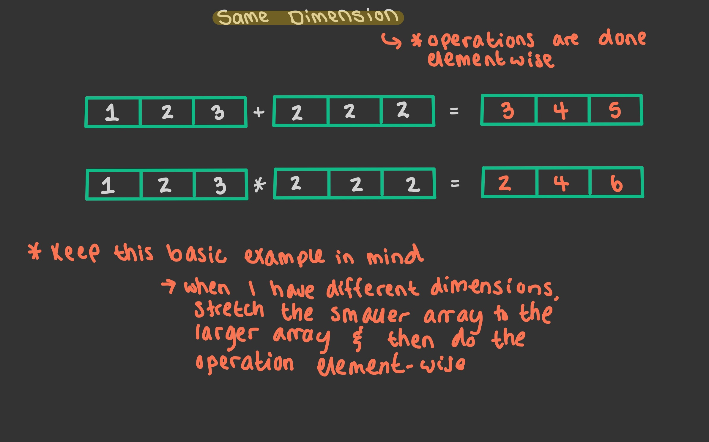

Lecture 11: July 19th, 2023#
Updates and Reminders:
Live lecture friends! I ask that you please watch the Matplotlib videos on your own (ideally by Friday morning).
Fresh set of outcome quizzes released this week. If you are missing an EO that’s not included this week, keep an eye out for an email from me.
Broadcasting in NumPy#
We’ll start today’s lecture by going in a litle more depth about broadcasting in NumPy. We saw a few examples in Lecture 10 that will be helpful to keep in mind. This portion of the lecture is done on the iPad.
As a refresher: here’s an example we did in Lecture 10.
import numpy as np
arr = np.zeros((4,4),dtype=np.int8)
arr.shape
(4, 4)
v = np.array([3,1,4,1])
v.shape
(4,)
arr[:] = v
arr
array([[3, 1, 4, 1],
[3, 1, 4, 1],
[3, 1, 4, 1],
[3, 1, 4, 1]], dtype=int8)

Timing a Computation: NumPy vs. List#
Goal: See examples that show how, in general, NumPy results in code that is both faster and shorter than base python.
import numpy as np
rng = np.random.default_rng()
arr = rng.integers(1,10,size=10**6)
Now, let’s turn arr into a list. I want these numbers to be the same, since I will be doing timing comparison.
mylist = list(arr)
Let’s look at the first 5 elements of arr.
arr[:5]
array([7, 9, 8, 9, 4])
mylist[:5]
[7, 9, 8, 9, 4]
Notice the following works just fine for arr.
1.5/arr[:5]
array([0.21428571, 0.16666667, 0.1875 , 0.16666667, 0.375 ])
However, the same syntax will cause an error for mylist.
1.5/mylist[:5]
---------------------------------------------------------------------------
TypeError Traceback (most recent call last)
Input In [11], in <cell line: 1>()
----> 1 1.5/mylist[:5]
TypeError: unsupported operand type(s) for /: 'float' and 'list'
The error is telling us that we cannot divide a float (1.5) by a list. To get this computation for mylist, we’ll need to either use a for-loop, or list comprehension.
Method 1: for-loops#
newlist = []
for x in mylist[:5]:
newlist.append(1.5/x)
newlist
[0.21428571428571427, 0.16666666666666666, 0.1875, 0.16666666666666666, 0.375]
Method 2: list comprehension#
[1.5/x for x in mylist[:5]]
[0.21428571428571427, 0.16666666666666666, 0.1875, 0.16666666666666666, 0.375]
Little preview: You might think that list comprehension runs faster than a for-loop…we’ll see if this is actually true in a little bit!
Now, let’s move into timing these computations!
%%timeit
1.5/arr #notice I'm taking the full arr with 10^6 elts
2.47 ms ± 18.9 µs per loop (mean ± std. dev. of 7 runs, 100 loops each)
%%timeit
newlist = []
for x in mylist:
newlist.append(1.5/x)
1.44 s ± 9.5 ms per loop (mean ± std. dev. of 7 runs, 1 loop each)
%%timeit
[1.5/x for x in mylist]
1.4 s ± 23.1 ms per loop (mean ± std. dev. of 7 runs, 1 loop each)
Upshot: NumPy arrays are way faster than base python. Another thing to keep in mind: using list comprehension is usually preferred to for-loops, and is more pythonic (elegant), but it is not really faster than using a for-loop.
Why: Why is NumPy so much faster?
NumPy has a way of knowing the data types ahead of time.
NumPy uses vectorized operations - works with the whole vector at once.
Counting in NumPy#
Goal: Use NumPy to estimate probabilities. The logic to probability estimation is exactly the same as what we saw in our MATLAB unit. We’ll just update it to be python-friendly.
(a) Suppose I make a NumPy array of random integers between -50 (inclusive) and 50 (inclusive). Suppose I also have a list with the same numbers.
n = 20 #length of array/list
arr = rng.integers(-50,51,size=n)
mylist = list(arr)
arr
array([ 19, -35, 5, -26, -11, 24, -7, 14, -42, 34, 49, -47, 44,
20, -45, 34, -48, -11, 43, 6])
mylist
[19,
-35,
5,
-26,
-11,
24,
-7,
14,
-42,
34,
49,
-47,
44,
20,
-45,
34,
-48,
-11,
43,
6]
(b) How many of the integers are less than 10?
We’ll do this problem three different ways!
Method 1: for-loop#
count = 0
for x in mylist:
if x < 10:
count += 1 #count = count + 1
count
11
Method 2: list comprehension#
len([x for x in mylist if x < 10])
11
Method 3: NumPy#
arr < 10
array([False, True, True, True, True, False, True, False, True,
False, False, True, False, False, True, False, True, True,
False, True])
np.count_nonzero(arr < 10)
11
arr
array([ 19, -35, 5, -26, -11, 24, -7, 14, -42, 34, 49, -47, 44,
20, -45, 34, -48, -11, 43, 6])
(c) At what indices do these integers less than 10 occur?
np.nonzero(arr < 10)
(array([ 1, 2, 3, 4, 6, 8, 11, 14, 16, 17, 19]),)
(d) Make a new array containing only these integers.
This is an example of a boolean mask (also called boolean indexing). This is the most important way of solving this problem.
arr[arr < 10]
array([-35, 5, -26, -11, -7, -42, -47, -45, -48, -11, 6])
Here is an example using list comprehension.
[x for x in mylist if x < 10]
[-35, 5, -26, -11, -7, -42, -47, -45, -48, -11, 6]
Finally, an example with a for-loop.
newlist = []
for x in mylist:
if x < 10:
newlist.append(x)
newlist
[-35, 5, -26, -11, -7, -42, -47, -45, -48, -11, 6]
(e) If you pick a random integer between -50 (inclusive) and 50 (inclusive), what is the probability that it is less than 10?
n = 10**7
arr = rng.integers(-50,51,size=n)
mylist = list(arr)
count = 0
for x in mylist:
if x < 10:
count += 1
p = count/n
print(p)
0.5942571
%%timeit
np.count_nonzero(arr < 10)/n
6.41 ms ± 68.9 µs per loop (mean ± std. dev. of 7 runs, 100 loops each)
np.count_nonzero(arr < 10)/n
0.5942571
We can actually compute the exact probability pretty easily here. Recall, between -50 (inclusive) and 50 (inclusive) there are 101 integers. Of those 101 integers, 60 are less than 10.
60/101
0.594059405940594
The most important part of this section of lecture is knowing how to do these computations in NumPy.
Logic in Python vs. NumPy#
General Rules:
In base python:
and,or,notIn NumPy (or Pandas):
&,|,~
import numpy as np
rng = np.random.default_rng()
n = 20
arr = rng.integers(-50,51,size=n)
mylist = list(arr)
arr
array([ 14, 0, 50, -23, -1, 10, 39, 19, -15, -49, -26, -6, -10,
2, 36, 24, -22, 2, -35, -2])
Motivating Question: Find all entries in arr and mylist that are strictly between -10 and 10.
[x for x in mylist if (x > -10) and (x < 10)]
[0, -1, -6, 2, 2, -2]
Another way:
[x for x in mylist if not((x <= -10) or (x >= 10))]
[0, -1, -6, 2, 2, -2]
Warning: Using & seems to work okay here, but you really should type out and. There are some situations in base python where & will not give what you might expect.
[x for x in mylist if (x > -10) & (x < 10)]
[0, -1, -6, 2, 2, -2]
arr[(arr > -10) & (arr < 10)]
array([ 0, -1, -6, 2, 2, -2])
Another way:
arr[~((arr <= -10) | (arr >= 10))]
array([ 0, -1, -6, 2, 2, -2])
The axis keyword argument#
Motivating Question: If you roll four distinct 6-sided dice, what is the probability that the biggest value is 5?
rng.integers(1,7,size=4)
array([5, 5, 6, 4])
exps = 10
s = 0
for i in range(exps):
if np.max(rng.integers(1,7,size=4)) == 5:
s += 1
p = s/exps
print(p)
0.5
Note: this method is very slow! We’re going to use %time
%%time
exps = 10**6
s = 0
for i in range(exps):
if np.max(rng.integers(1,7,size=4)) == 5:
s += 1
p = s/exps
print(p)
0.284327
CPU times: user 14.2 s, sys: 313 ms, total: 14.5 s
Wall time: 14.3 s
The way we’ll make this fast, is by instead creating a NumPy array with \(10^6\) rows, each row representing an experiment.
exps = 10
arr = rng.integers(1,7,size=(exps,4))
print(arr)
[[3 6 6 5]
[1 3 6 6]
[4 5 4 1]
[6 6 4 5]
[1 6 5 3]
[1 4 3 4]
[3 3 5 3]
[1 2 4 3]
[6 1 5 4]
[5 4 5 1]]
Notice, this next line of code doesn’t do quite what we want…
np.max(arr)
6
What’s happening is that the maximum is taking the maximum over all elements in arr. Instead, I want it to take maximums over rows. We will go through two examples of how to do this.
Method 1#
More flexible (works for more functions), but runs more slowly.
help(np.apply_along_axis)
Help on function apply_along_axis in module numpy:
apply_along_axis(func1d, axis, arr, *args, **kwargs)
Apply a function to 1-D slices along the given axis.
Execute `func1d(a, *args, **kwargs)` where `func1d` operates on 1-D arrays
and `a` is a 1-D slice of `arr` along `axis`.
This is equivalent to (but faster than) the following use of `ndindex` and
`s_`, which sets each of ``ii``, ``jj``, and ``kk`` to a tuple of indices::
Ni, Nk = a.shape[:axis], a.shape[axis+1:]
for ii in ndindex(Ni):
for kk in ndindex(Nk):
f = func1d(arr[ii + s_[:,] + kk])
Nj = f.shape
for jj in ndindex(Nj):
out[ii + jj + kk] = f[jj]
Equivalently, eliminating the inner loop, this can be expressed as::
Ni, Nk = a.shape[:axis], a.shape[axis+1:]
for ii in ndindex(Ni):
for kk in ndindex(Nk):
out[ii + s_[...,] + kk] = func1d(arr[ii + s_[:,] + kk])
Parameters
----------
func1d : function (M,) -> (Nj...)
This function should accept 1-D arrays. It is applied to 1-D
slices of `arr` along the specified axis.
axis : integer
Axis along which `arr` is sliced.
arr : ndarray (Ni..., M, Nk...)
Input array.
args : any
Additional arguments to `func1d`.
kwargs : any
Additional named arguments to `func1d`.
.. versionadded:: 1.9.0
Returns
-------
out : ndarray (Ni..., Nj..., Nk...)
The output array. The shape of `out` is identical to the shape of
`arr`, except along the `axis` dimension. This axis is removed, and
replaced with new dimensions equal to the shape of the return value
of `func1d`. So if `func1d` returns a scalar `out` will have one
fewer dimensions than `arr`.
See Also
--------
apply_over_axes : Apply a function repeatedly over multiple axes.
Examples
--------
>>> def my_func(a):
... """Average first and last element of a 1-D array"""
... return (a[0] + a[-1]) * 0.5
>>> b = np.array([[1,2,3], [4,5,6], [7,8,9]])
>>> np.apply_along_axis(my_func, 0, b)
array([4., 5., 6.])
>>> np.apply_along_axis(my_func, 1, b)
array([2., 5., 8.])
For a function that returns a 1D array, the number of dimensions in
`outarr` is the same as `arr`.
>>> b = np.array([[8,1,7], [4,3,9], [5,2,6]])
>>> np.apply_along_axis(sorted, 1, b)
array([[1, 7, 8],
[3, 4, 9],
[2, 5, 6]])
For a function that returns a higher dimensional array, those dimensions
are inserted in place of the `axis` dimension.
>>> b = np.array([[1,2,3], [4,5,6], [7,8,9]])
>>> np.apply_along_axis(np.diag, -1, b)
array([[[1, 0, 0],
[0, 2, 0],
[0, 0, 3]],
[[4, 0, 0],
[0, 5, 0],
[0, 0, 6]],
[[7, 0, 0],
[0, 8, 0],
[0, 0, 9]]])
np.apply_along_axis(np.max,axis=1,arr=arr)
array([6, 6, 5, 6, 6, 4, 5, 4, 6, 5])
(np.apply_along_axis(np.max,axis=1,arr=arr) == 5).mean()
0.3
exps = 10**6
arr = rng.integers(1,7,size=(exps,4))
%%time
(np.apply_along_axis(np.max,axis=1,arr=arr) == 5).mean()
CPU times: user 5.52 s, sys: 14.9 ms, total: 5.53 s
Wall time: 5.54 s
0.284584
The axis keyword is extremely important; it tells us which dimension of the array to work along, so we only talk about axis for arrays with at least 2 dimensions. On Friday, we’ll go over it in more detail, but the basic idea is that if you want to move horizontally, use axis = 1, and if you want to move vertically, use axis = 0.
print(arr)
[[2 4 1 5]
[1 2 2 3]
[1 3 2 5]
...
[2 3 3 1]
[5 1 1 2]
[4 4 2 5]]
Method 2#
Less flexible (can only use with one function), but faster because more specialized.
print(arr[:5])
[[2 4 1 5]
[1 2 2 3]
[1 3 2 5]
[1 1 6 2]
[5 5 3 6]]
arr[:5].max()
6
Same issue here! It’s taking the maximum of all elements.
help(arr.max)
Help on built-in function max:
max(...) method of numpy.ndarray instance
a.max(axis=None, out=None, keepdims=False, initial=<no value>, where=True)
Return the maximum along a given axis.
Refer to `numpy.amax` for full documentation.
See Also
--------
numpy.amax : equivalent function
exps = 10**6
arr = rng.integers(1,7,size=(exps,4))
%%time
arr.max(axis = 1)
CPU times: user 26.5 ms, sys: 590 µs, total: 27.1 ms
Wall time: 25.9 ms
array([5, 6, 6, ..., 6, 6, 6])
More on the axis keyword argument#
This is a portion that uses the iPad :)
We actually skipped this portion for today. We’ll circle back around on Friday.
An Exact Probability#
Goal: Compute an exact probability to the motivation question of the previous section:
If you roll 4 distinct 6-sided dice, what is the probability that the biggest value is 5?
We also skipped this portion because of time. It’s not super important, but be sure to watch the lecture video.
any and all#
Make a 100 row, 4 column NumPy array of random real numbers between 0 and 1.
arr = rng.random(size=(100,4))
arr[1]
array([0.48232985, 0.77648185, 0.38125314, 0.81551315])
Find the subarray containing all rows in which at least one number is bigger than 0.6
arr[:5]
array([[0.25626401, 0.42925315, 0.83568791, 0.33928249],
[0.48232985, 0.77648185, 0.38125314, 0.81551315],
[0.71166109, 0.94177257, 0.03187433, 0.33600269],
[0.46775404, 0.43653034, 0.98981292, 0.81104906],
[0.49262765, 0.69807676, 0.01490951, 0.20763618]])
arr[:5][(arr[:5] > 0.6).any(axis=1)]
array([[0.25626401, 0.42925315, 0.83568791, 0.33928249],
[0.48232985, 0.77648185, 0.38125314, 0.81551315],
[0.71166109, 0.94177257, 0.03187433, 0.33600269],
[0.46775404, 0.43653034, 0.98981292, 0.81104906],
[0.49262765, 0.69807676, 0.01490951, 0.20763618]])
arr[(arr > 0.6).any(axis=1)].shape
(83, 4)
Find the subarray containing all rows in which no numbers are between 0.4 and 0.6
arr[((arr < 0.4) | (arr > 0.6)).all(axis = 1)]
array([[0.71166109, 0.94177257, 0.03187433, 0.33600269],
[0.38193599, 0.89527315, 0.64148123, 0.15686497],
[0.76368074, 0.27019894, 0.92981472, 0.24439368],
[0.36772337, 0.97962582, 0.83923905, 0.69680942],
[0.00667648, 0.07249786, 0.74032004, 0.7363663 ],
[0.73328877, 0.92333777, 0.66773265, 0.88535596],
[0.80701591, 0.3449479 , 0.20992278, 0.60378555],
[0.25591788, 0.89684427, 0.83105722, 0.99990535],
[0.39509772, 0.17685386, 0.31461724, 0.96885988],
[0.04586101, 0.66755607, 0.10386779, 0.78545302],
[0.3089175 , 0.83366478, 0.72785384, 0.86361343],
[0.27187998, 0.61281071, 0.69656535, 0.23495686],
[0.3774089 , 0.93688281, 0.36207896, 0.07360565],
[0.05845968, 0.78805543, 0.91020555, 0.232817 ],
[0.02868508, 0.85533612, 0.90457352, 0.82581773],
[0.25505865, 0.8506571 , 0.37843935, 0.60329199],
[0.24962041, 0.29835574, 0.17514132, 0.77858587],
[0.31870661, 0.12061173, 0.20117928, 0.9599299 ],
[0.26885381, 0.8489128 , 0.11554899, 0.33211194],
[0.99960191, 0.61043621, 0.82029659, 0.73532029],
[0.93644745, 0.79357243, 0.32360581, 0.64931828],
[0.1750184 , 0.72132579, 0.81619298, 0.11393044],
[0.95361801, 0.9695472 , 0.6862029 , 0.33024308],
[0.18320576, 0.36744074, 0.70519411, 0.89590611],
[0.27246484, 0.83569327, 0.26693 , 0.83417537],
[0.09221735, 0.72561943, 0.24949785, 0.804151 ],
[0.75309656, 0.07747279, 0.61536709, 0.68430614],
[0.29517158, 0.24013079, 0.06504456, 0.15860134],
[0.10557926, 0.11436284, 0.27735596, 0.93086819],
[0.74710703, 0.39126411, 0.61832954, 0.80689663],
[0.03893165, 0.96075896, 0.64312888, 0.76824225],
[0.98782873, 0.37478041, 0.90938737, 0.77027385],
[0.82189075, 0.6148604 , 0.03038164, 0.11543349],
[0.91070099, 0.7811802 , 0.05089722, 0.70472592],
[0.04252845, 0.14482124, 0.06388575, 0.74245319],
[0.8279686 , 0.39648966, 0.37671105, 0.04316702],
[0.35901812, 0.65300587, 0.98111232, 0.79048964],
[0.25347295, 0.00373847, 0.61680551, 0.98763375],
[0.91728511, 0.68081389, 0.22783166, 0.83278155],
[0.96392014, 0.39195072, 0.03344433, 0.18272589],
[0.0434404 , 0.05675503, 0.2321224 , 0.21925918]])